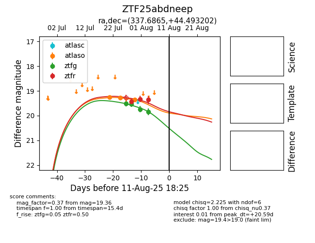

Target ZTF25abdneep at 2025-08-06 17:45, see:
FINK: fink-portal.org/ZTF25abdneep
Lasair: lasair-ztf.lsst.ac.uk/objects/ZTF25abdneep
ALeRCE: alerce.online/object/ZTF25abdneep
alt names
ZTF25abdneep (ztf,fink)
coordinates:
equatorial (ra, dec) = (337.6865,+44.49320)
galactic (l, b) = (98.1394,-11.50064)
photometry
last atlaso=19.35, ztfg=19.85, ztfr=19.36
3 atlaso, 4 ztfg, 3 ztfr detections
